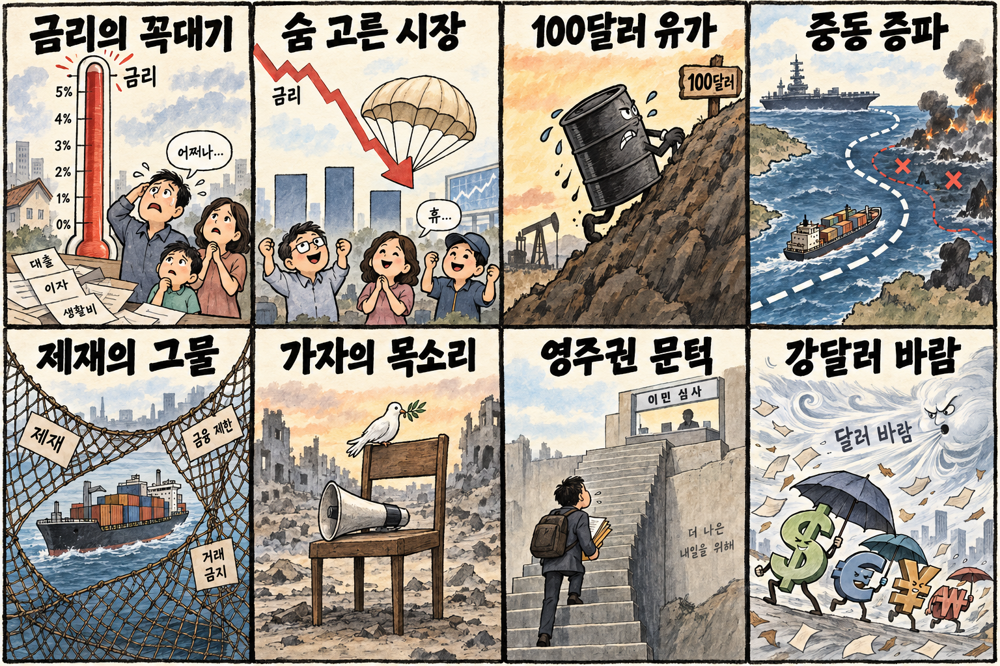
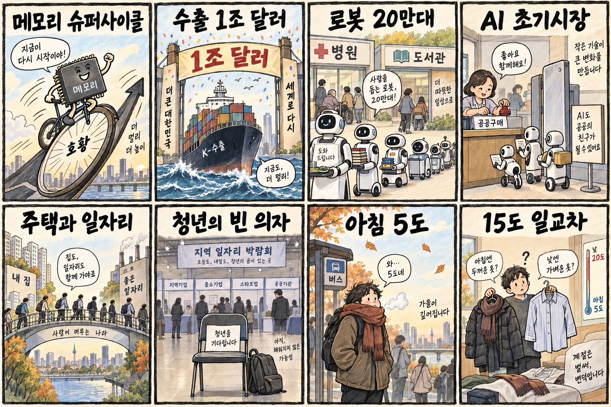

01
스트래티지 · 153.77→160.50달러 · +4.38%
내용요약 시가 대비 +4.38%로 조사 종목 중 가장 강했습니다.
예상여파 가상자산 위험선호에는 긍정적이지만 높은 변동성 때문에 국내 관련주 추격은 경계해야 합니다.
MORNING_BRIEFING_20261002
작성 시각: 2026-10-02 06:37 KST · 직전 미국 정규장과 2026-10-02 KST 당일 공개 기사 기준
직전 미국 정규장인 10월 1일 뉴욕증시는 다우 +0.04%, S&P 500 +0.19%, 나스닥 +0.04%로 강보합 마감했습니다. 장중 국채금리 급등이 진정됐지만 브렌트유가 4% 넘게 오르며 상승폭은 제한됐습니다. 한국 증시는 전날 KOSPI +1.95%, KOSDAQ +4.48%로 급반등해 시초가 추격보다 전일 상승분을 지키는지 확인하는 대응이 필요합니다.
| 지수 | 종가 | 등락률 | 한국 증시 시사점 |
|---|---|---|---|
| 다우존스 | 50,926.56 | +0.04% | 유가 상승과 경기민감주 부담 점검 |
| S&P 500 | 7,666.45 | +0.19% | 유가 상승과 경기민감주 부담 점검 |
| 나스닥 종합 | 26,871.60 | +0.04% | 금리 고점 통과 여부와 성장주 변동성 점검 |
다우 +0.04%, S&P 500 +0.19%, 나스닥 +0.04%로 금리 진정에도 상승폭은 작았습니다.
KOSPI +1.95%, KOSDAQ +4.48%로 전일 위험선호가 강하게 회복됐습니다.
마이크론 호실적은 반도체에 우호적이나 브렌트유 102달러는 비용 부담입니다.
06:30 장전 기준을 모두 통과한 종목이 없어 현금 관망을 유지합니다.
10월 1일 보고서는 공식 추천을 내지 않았습니다. 게시 당시 판단을 유지하며 사후 종목을 추가하지 않습니다.
| 시장 | 종가 | 등락률 | 기준 |
|---|---|---|---|
| KOSPI | 6,971.35 | +1.95% | 10월 1일 정규장 · 시가 대비 +2.30% |
| KOSDAQ | 894.29 | +4.48% | 10월 1일 정규장 · 시가 대비 +4.72% |
| 다우존스 | 50,926.56 | +0.04% | 미국 10월 1일 정규장 |
| S&P 500 | 7,666.45 | +0.19% | 미국 10월 1일 정규장 |
| 나스닥 종합 | 26,871.60 | +0.04% | 미국 10월 1일 정규장 |
마이크론이 시가 대비 +4.08%로 호실적과 메모리 수요 기대를 반영했습니다.
옥시덴털 +3.84%로 국제유가 급등의 수혜 기대가 반영됐습니다.
알파벳이 -3.58%로 조사 종목 중 낙폭이 가장 컸습니다.
브로드컴 -2.36%로 반도체 내부에서도 차별화가 나타났습니다.
내용요약 시가 대비 +4.38%로 조사 종목 중 가장 강했습니다.
예상여파 가상자산 위험선호에는 긍정적이지만 높은 변동성 때문에 국내 관련주 추격은 경계해야 합니다.
내용요약 시가 대비 +4.08%로 호실적과 메모리 슈퍼사이클 기대를 반영했습니다.
예상여파 국내 HBM 심리에 우호적이나 전날 국내 반도체 급등 이후의 갭 상승은 별도 위험입니다.
내용요약 시가 대비 +3.84%로 유가 급등에 에너지주가 강했습니다.
예상여파 정유에는 우호적일 수 있으나 항공·운송·화학에는 원가 부담이 커질 수 있습니다.
내용요약 시가 대비 -3.58%로 대형 플랫폼주 중 약세가 두드러졌습니다.
예상여파 국내 인터넷·광고 플랫폼의 투자심리에 부담이 될 수 있으나 기업별 실적은 구분해야 합니다.
내용요약 시가 대비 -2.36%로 AI 반도체 내부 차별화가 나타났습니다.
예상여파 AI 인프라 강세를 업종 전체로 단순 확장하지 말고 종목별 실적·밸류에이션을 확인해야 합니다.
전날 KOSPI는 6,971.35로 전일 종가 대비 +1.95%, 시가 대비 +2.30%였고 KOSDAQ은 전일 종가 대비 +4.48%, 시가 대비 +4.72%였습니다. 밤사이 미국 3대 지수는 소폭 올랐고 마이크론은 강했지만, 유가가 4% 넘게 급등하고 알파벳·브로드컴은 약했습니다. 국내 반도체는 실적 기대가 유효해도 전일 급반등 뒤 시초가 추격보다 외국인 수급과 전일 고점 지지가 우선입니다.
오늘은 추천 없음 — 현금 관망
06:30 장전 시점에는 당일 시가·호가 유동성·당일 수급을 확인할 수 없고, 전날 KOSPI·KOSDAQ 급반등으로 과열과 갭 위험이 커졌습니다. 종합점수 75점·상승확률 60%·예상 손익비 1.5를 모두 실제 데이터로 검증한 후보가 없습니다.
관심 연결종목 메모리 반도체, 정유, 공공 서비스 로봇은 개장 뒤 상대강도 관찰 대상일 뿐 매수 추천이 아닙니다. 시초가 급등 종목은 추격매수하지 않습니다.
미국 장중 금리 진정이 아시아 시간에도 이어지는지 확인합니다.
HBM 기대가 국내 반도체 외국인 순매수로 이어지는지 봅니다.
정유 강세와 운송·화학 비용 부담을 함께 점검합니다.
아침 5도와 서리·안개에 따른 교통·건강 영향을 확인합니다.
핵심 요약: 마이크론의 실적 급증이 AI 메모리 수요를 재확인했고 금융·국방 현장으로 인공지능 적용 범위가 넓어지고 있습니다. 동시에 캘리포니아의 오픈AI 안전성 조사는 성장 속도만큼 책임과 통제가 중요해졌음을 보여줍니다.
내용요약 개인별 투자 정보 탐색과 분석을 돕는 금융 인공지능 서비스를 개발한다는 당일 보도입니다.
예상여파 금융 AI 활용은 편의성을 높이지만 설명가능성·오류 통제·개인정보 보호가 실제 신뢰를 좌우합니다.
내용요약 마이크론의 영업이익이 크게 늘며 인공지능 서버용 메모리 수요의 강도를 재확인했다는 당일 보도입니다.
예상여파 HBM·D램 공급망에는 우호적이지만 국내 대형주는 전일 급등과 시초가 갭 위험을 함께 봐야 합니다.
내용요약 미국 캘리포니아주가 인공지능 해킹과 안전성 문제와 관련해 오픈AI에 소환장을 발부했다는 당일 보도입니다.
예상여파 생성형 AI 기업의 안전 의무와 규제 대응 비용이 커질 수 있어 제품 출시 속도와 기업 도입 기준에 영향을 줄 수 있습니다.
내용요약 군 경계 현장에 인공지능 로봇 기술을 적용하는 사례와 쟁점을 다룬 당일 보도입니다.
예상여파 위험 업무 자동화 가능성과 함께 오탐·책임소재·인간 통제 원칙을 엄격히 검증해야 합니다.
내용요약 벤처투자사 베세머가 대규모 신규 자금을 조달하고 초기 단계 투자 비중을 높인다는 당일 보도입니다.
예상여파 AI 스타트업 자금 조달 여건에 숨통이 트일 수 있으나 기업가치와 실제 매출 성장의 괴리는 경계해야 합니다.
핵심 요약: 미국 국채금리는 24년 만의 고점권에 올라 세계 금융비용을 압박했고, 중동 전력 증파 소식에 브렌트유가 102달러를 넘어섰습니다. 러시아 제재와 가자 인도주의 문제가 이어지는 가운데 일본은 영주권 문턱을 높이는 방향을 검토하고 있습니다.
내용요약 영국이 러시아 관련 제재 31건을 발표하면서 한국의 사할린-2 액화천연가스 수입은 제재 면제 대상이라고 밝힌 당일 보도입니다.
예상여파 에너지 공급 안정에는 완충 요인이지만 제재 범위 확대와 운송·보험 비용 변화는 계속 점검해야 합니다.
내용요약 가자 전쟁 피해 당사자의 목소리를 지속해서 들어야 한다는 현지·국제사회 문제의식을 다룬 당일 보도입니다.
예상여파 휴전·인도지원 협상의 압력이 커질 수 있으며 민간인 보호와 구호 통로의 실제 작동 여부가 핵심입니다.
내용요약 미국 국채금리가 24년 만의 높은 수준을 기록하며 세계 채권시장 매도 압력이 번졌다는 당일 보도입니다.
예상여파 고금리 장기화는 성장주 가치평가와 신흥국 자금흐름, 가계·기업 조달비용에 부담을 줄 수 있습니다.
내용요약 미국의 중동 전력 증파 소식에 브렌트유가 4% 뛰어 102달러를 넘어섰다는 당일 보도입니다.
예상여파 항공·운송·화학 업종 비용과 물가 기대를 자극할 수 있어 공급 차질과 전략비축유 대응을 함께 봐야 합니다.
내용요약 일본이 영주권 소득 등 요건을 대폭 강화하는 방향을 검토한다는 당일 보도입니다.
예상여파 외국인 인력 유치와 정착 비용에 영향을 줄 수 있어 시행 시점과 예외 규정이 중요합니다.

핵심 요약: 메모리 슈퍼사이클과 반도체 수출이 한국 경제의 상방 동력을 만들고, 정부는 인공지능 로봇 공공보급으로 초기시장 조성에 나섰습니다. 지역 청년 일자리의 구조적 문제는 남아 있으며 오늘은 아침 5도와 큰 일교차에 대비해야 합니다.
내용요약 인공지능 서버 수요와 메모리 가격 상승이 삼성전자·SK하이닉스 실적 개선 기대를 높였다는 당일 보도입니다.
예상여파 반도체 수출과 이익 전망에는 긍정적이나 전일 급등 뒤 가격 부담과 외국인 수급을 확인해야 합니다.
내용요약 정부가 공공부문을 중심으로 인공지능 로봇 20만대 보급을 추진해 초기시장을 만들겠다는 당일 보도입니다.
예상여파 서비스·물류·의료 로봇 생태계에는 기회지만 예산 확정, 조달 기준, 안전 인증을 기업별 계약과 구분해야 합니다.
내용요약 반도체 수출 호조를 바탕으로 한국의 연간 수출 1조 달러 조기 달성 가능성이 제기됐다는 당일 보도입니다.
예상여파 무역수지와 제조업 투자에 우호적이지만 반도체 편중과 환율·유가 상승에 따른 비용 위험이 남습니다.
내용요약 울산 청년들이 대기업 취업과 창업 모두에서 느끼는 지역 일자리의 구조적 어려움을 다룬 당일 보도입니다.
예상여파 지역 산업 다변화와 주거·교육 연계가 뒤따르지 않으면 청년 유출과 숙련인력 부족이 심화할 수 있습니다.
내용요약 오늘 아침 최저기온이 5도까지 떨어지고 낮과 밤 기온차가 15도 안팎으로 커진다는 당일 예보입니다.
예상여파 출근길 보온과 호흡기 건강, 내륙 서리로 인한 농작물 피해, 운전 시 안개에 유의해야 합니다.
